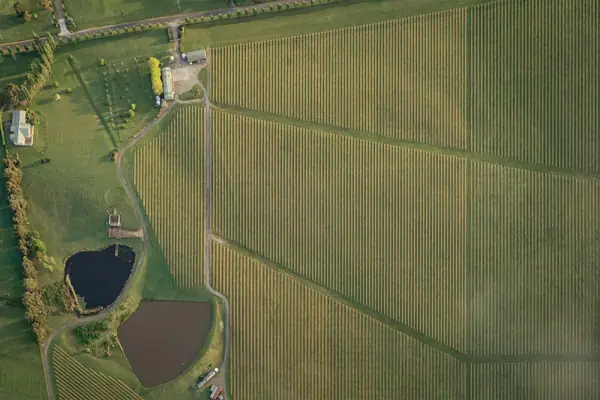

Home › Wine regions › Yarra Valley
Yarra Valley wine region

Photo: Johan Mouchet on Unsplash
Cool-climate finesse.
CountryAustralia
Key grapesPinot Noir, Chardonnay
SubregionsUpper Yarra, Lower Yarra, Yarra Glen, Coldstream
Notable producers in Yarra Valley
- Yering Station
- Coldstream Hills
- De Bortoli
- Mount Mary
- Giant Steps
Yarra Valley wines to try
Yarra Yering Dry Red Wine No. 1
Yarra Valley · Cabernet Sauvignon, Merlot, Malbec, Petit Verdot
Bordeaux-style blend: blackcurrant, cedar, violets and fine tannins.
Food: Roast beef, lamb
More wine regions in Australia
See Yarra Valley on the wine map
Support The Wine Reference
This guide is free, with no paywall. If it helped you choose a bottle, you can buy me a glass and keep it growing.
🍷 Buy me a glass